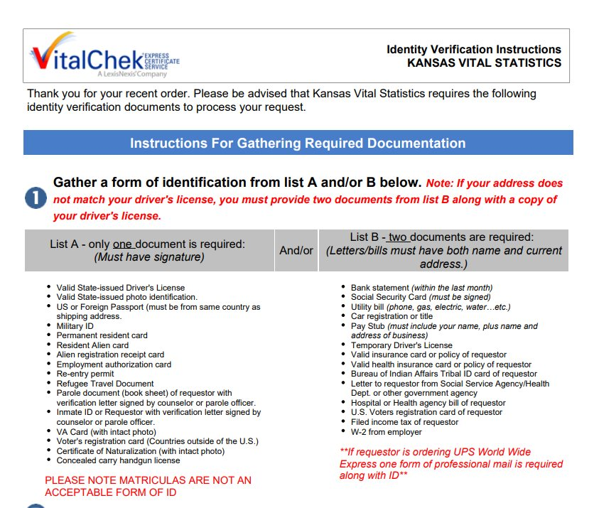

Timeline photos
I just submitted a request for a birth certificate for someone that was born in Kansas but is now homeless here in Akron.
There are A LOT of states that require 1 or 2 forms of identification in order to get a birth certificate. Kansas is one of them.
The first thing that happens to you when you become homeless is that EVERYTHING gets stolen. In Ohio, you can't get an ID without a birth certificate.
I went through the motions to get this guy his birth certificate. And I submitted my identification. But I have almost no optimism that this will work.
Without identification, you do not exist.